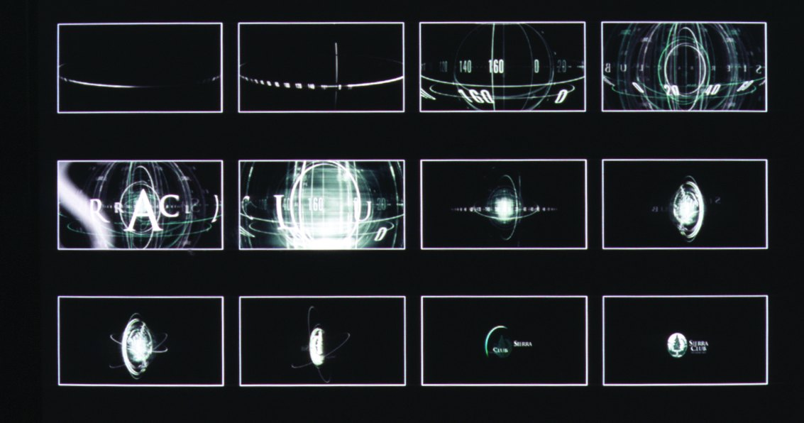
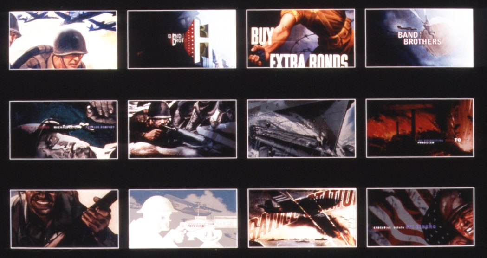
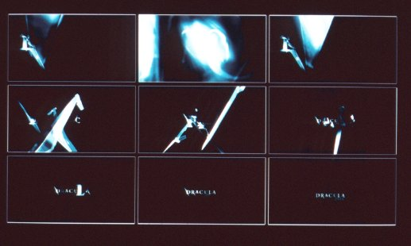
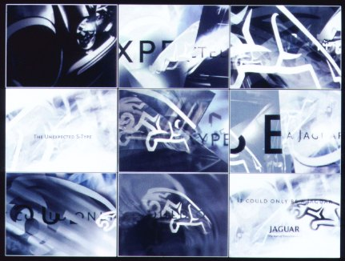

Broadcast & film · Film · 1999–2005
Broadcast and film storyboards
Storyboards and styleframes for film titles, broadcast branding and commercials, 1999–2005.
Role
Designer
Years
1999–2005
Scope
Title sequences, broadcast identity and commercial storyboards
The problem
Storyboards and styleframes used to pitch and plan motion work for film, television and brand clients.
The approach
The boards include logo animations for Sanyo and the Sierra Club, title-sequence frames for Band of Brothers and Dracula, and a typographic sequence for Jaguar, each laid out as numbered frames showing how type and image move across a sequence.




Leadership
Designed the storyboards and styleframes as part of her early motion and broadcast work.